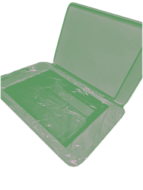
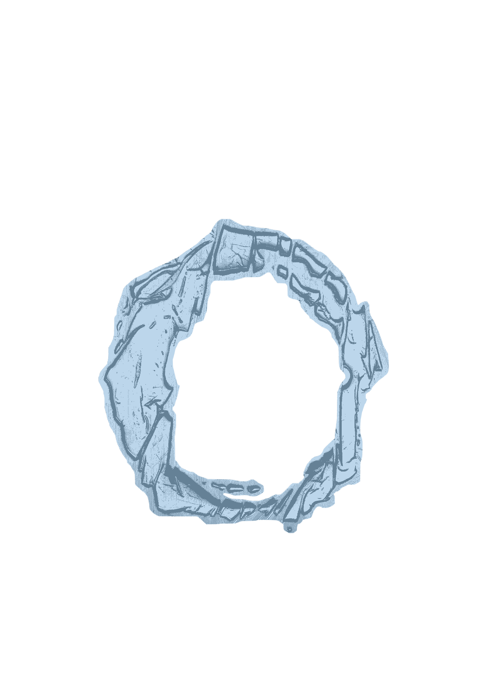

the first step in creating your own display font is to choose...
let your mind run free and choose a material to work with
what has recently peaked your interest?
i invite you to use a pen and paper to write down as many responses as possible to the following prompts (or your own prompts)
i chose to work with water as my material. i was inspired by the 8th poem from the Tao Teh Ching, a Chinese classic text and foundational work of Taoism from roughly 4th century BC
“The highest form of goodness is like water.
Water knows how to benefit all things without striving with them.
It stays in places loathed by all men.
Therefore, it comes near the Tao.”
(Tao Teh Ching, 8)
remove all preconceived notions of what your font will look like. do not have a final product in mind. if you have expectations, break up with them. i am warning you now that you will not make a font that you can currently imagine. following this method is meant to bring you to wildly unexpected outcomes.
without hesitation, immediately after brainstorming, you will attempt to create as many letter forms as possible using your recent choices
since the poem i was interested was about water, i chose to try to "capture" water. i covered my cheap scanner in saran wrap, poured a drop of water on the flatbed, and used my finger to trace the shape before scanning it in.
once a project evolves from the chaos of the previous step, you may document using any type of capturing method
since this is a fluid process, my experiments "create" and "capture" phases flowed into one another. scanning my letter forms brought them into the digital world where i was then able to refine further
you may choose to keep the background of your letter forms, but in my process i chose to use the "preview" tool to remove the background
you can process your font into a .ttf or .otf file using "caligraphr", a free font making website
caligraphr will automatically vectorize your letterforms.
if you would like your font to remain the same as it was in the previour step, simply save all your files in a folder named after your new font. then compress and share your work!